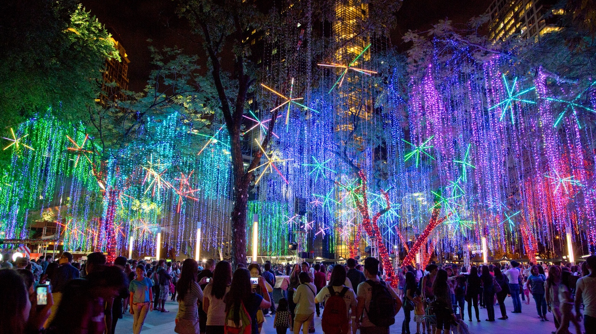
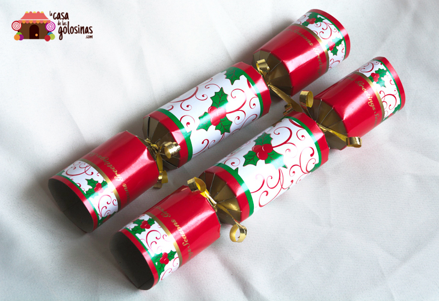
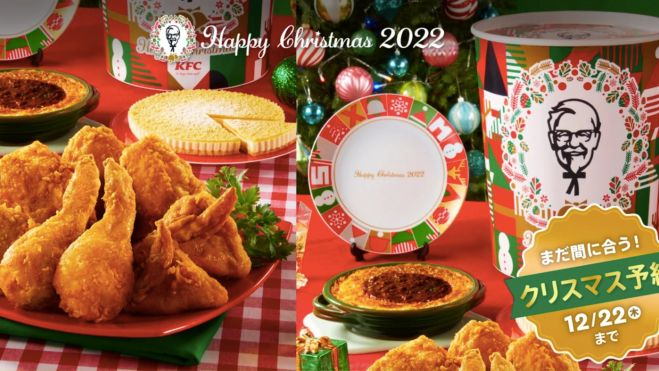
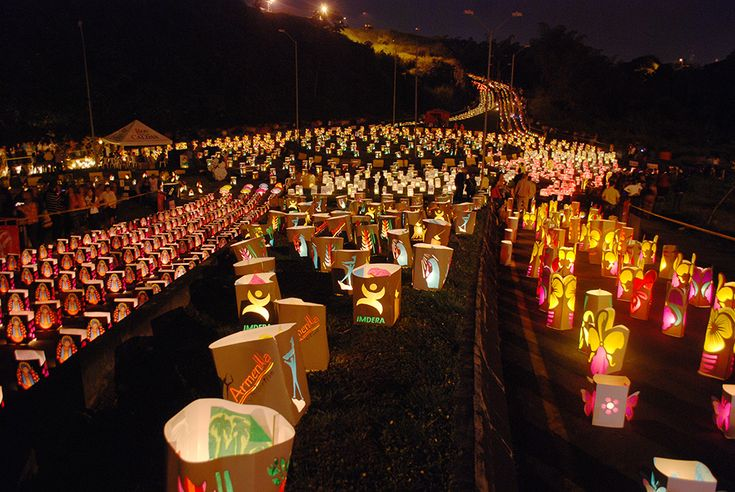
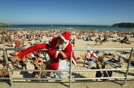
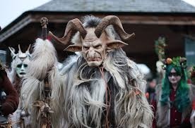

Después de una larga espera, oficialmente ya tenemos aquí la Navidad. Aunque cada uno celebra esta fiesta a su manera, existen algunas tradiciones navideñas alrededor del mundo que sorprenden a cualquiera. Para demostrártelo, he recopilado las 7 tradiciones navideñas más curiosas de todos los rincones del planeta.
1. En Filipinas la Navidad dura 5 meses

Mira que antes pensaba que montar el árbol el día 1 de noviembre era anticiparse demasiado, pero después de descubrir que en Filipinas celebran la Navidad durante 5 meses, lo anterior no me asombra para nada. Iniciándose a principios de septiembre y finalizando oficialmente el 6 de enero, son las Navidades más largas del mundo.
Seguramente la primera pregunta que te venga a la mente es ¿por qué? Esta costumbre nace de los valores de la sociedad filipina. Se caracterizan por ser muy familiares, pero muchos de ellos residen en el extranjero o en fuera de sus provincias, por lo que empiezan a prepararse desde temprano para “volver a casa por Navidad”. CONOCER MÁS
2. Caramelos de papel, Reino Unido

Además del tradicional “advent calendar” y el muérdago, en Inglaterra tienen una costumbre de lo más divertida. Aunque en otras partes del globo los crackers son conocidos como galletas saladas, en el Reino Unido tiene un significado completamente distinto. Para los ingleses, los crackers son unos rollos de cartón con forma de caramelo que se emplean para decorar las mesas en Navidad.
En su interior, guardan un juguete o detalle, una frase con un chiste y una corona de papel. Para conseguir todos los regalos, debe abrirse entre dos personas. Cada una tira de un extremo y aquel que se quede con el trozo más grande, consigue el premio. ¡Aunque vigila! En la competición por conseguir el regalo, los crackers sorprenden con un pequeño estallido (algunos de ellos llevan un poco de pólvora para que el ruido impresione a toda la familia). CONOCER MÁS
3. En Japón, la cena de Navidad se sirve de KFC

Como lo lees. En Japón, el principal protagonista de la Navidad es el restaurante de pollo frito KFC. Aunque pueda parecerte una locura, la realidad es que nuestra tradición de cenar un gran banquete por Navidad está muy ligado a la religión cristiana, simbolizando la celebración del nacimiento de Jesucristo. Por lo tanto, no debe sorprendernos que un país en el que solamente el 1% de la población es católica, no siga esta costumbre.
Como muchas costumbres de la actualidad, la popularidad de pedir KFC para Navidad en Japón, fue fruto de una campaña publicitaria de los años 70, donde se anunció la creación de bol específico para las fiestas de Navidad. La idea se popularizó rápidamente, y el mensaje del anuncio “Kentucky para Navidad”, se convirtió en una tradición para los japoneses. CONOCER MÁS
4. El día de las velitas, Colombia

En lugar de las típicas luces navideñas que se cuelgan por las ciudades, en Colombia dan la bienvenida a la Navidad de una forma mucho más íntima. La noche del 7 de diciembre, se homenajea a María y a la Fiesta de la Inmaculada Concepción, iluminando los hogares colombianos con millones de velas blancas y de colores en farolillos de papel.
Esa noche se conmemora el momento en que el Arcángel Gabriel anunció a María que fue la elegida, desde antes de su nacimiento, para ser la madre de Jesús. Sin embargo, lo que se inició como una costumbre religiosa, se ha arraigado intensamente en la cultura colombiana, convirtiéndose en una tradición para unir a la familia y celebrarla con tus seres más queridos.VER MÁS
5. Cerveza para Santa Claus, Irlanda
Prácticamente en todos los países los más pequeños de la casa dejan a Papá Noel o los Reyes Magos alimentos para que repongan fuerzas y puedan seguir entregando los regalos al resto de niños del mundo. Normalmente, se opta por dejar leche, galletas o polvorones como detalle.
Sin embargo, en Irlanda le han dado su propio toque a esta tradición. En lugar de dejar a Santa los típicos dulces navideños, la noche del 24 de diciembre prefieren dejarle un pudding hecho con cerveza Guinness o whiskey irlandés. VER MÁS
6. Navidad en la playa, Australia y Nueva Zelanda

Alguna vez has pensado en celebrar las navidades en la playa? Aunque te pueda parecer algo surrealista, la realidad es que, en Australia, cada Navidad la media de temperatura es de 35º, así que… ¡Sustituye los guantes y bufandas por unas chanclas y disfruta de la arena en las playas de Sídney! Sin embargo, no creas que no decoran las calles con motivos navideños. Cada Navidad se coloca en la capital un árbol de Navidad de 26 metros de altitud con más de 21.000 bombillas, 4.000 bolas de navidad y 1.599 guirnaldas.
En Nueva Zelanda tienen una situación bastante similar, la Navidad se celebra a las orillas del mar, pero a diferencia de Australia, prefieren celebrar la festividad reuniendo a las familias con una barbacoa, ya sea en la playa o en los jardines de las casas. VER MÁS
7. Krampus. El villano de la navidad, Alemania

¿Quién dijo que la Navidad no podía ser terrorífica? En Alemania, sin duda lo es. Además de premiar a los niños buenos con los regalos que trae Santa Claus, Krampus, un demonio del folclore centroeuropeo, azota a los pequeños que no se han portado bien y los arrastra con él al inframundo.
Actualmente, esta extraña tradición no solo tiene lugar en tierras alemanas, sino también en Austria, Hungría y otras regiones de Europa Central, donde aprovechan la noche del 5 de diciembre para realizar desfiles, en los que los adultos se visten con máscaras realmente terroríficas para emular a este demonio navideño. VER MÁS
/)